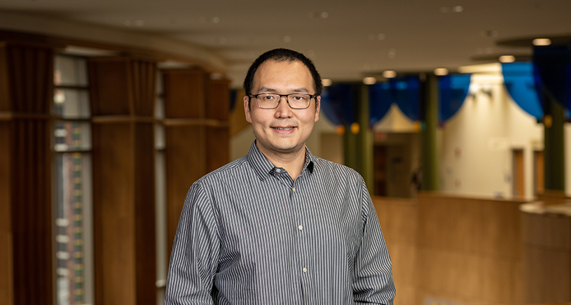
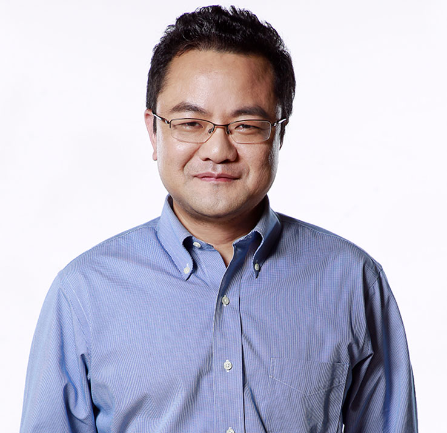

Announcing Stats Up AI’s Official Recognition as an ASA Interest Group
We are thrilled to announce that Stats Up AI has been officially recognized as an ASA Interest Group! This significant milestone marks the beginning of our journey to advance the intersection of statistics and artificial intelligence, fostering collaboration, innovation, and professional growth within the ASA community.
Formation of the Steering Committee
To guide our newly established interest group, we have formed a dedicated Steering Committee. This team is committed to steering our initiatives and ensuring that we achieve our objectives effectively. Our Steering Committee members are:
-
David Banks, Professor, Department of Statistical Science, Duke University
-
Edgar Dobriban, Associate Professor, Department of Statistics & Data Science, University of Pennsylvania
-

Jian Kang, Professor, Department of Biostatistics, University of Michigan
-
Xihong Lin, Professor, Department of Biostatistics, Harvard University
-
Daniel Nettleton, Professor, Department of Statistics, Iowa State University
-
Wenyi Wang, Professor, Department of Bioinformatics and Computational Biology & Department of Biostatistics, The University of Texas MD Anderson Cancer Center
-
Tian Zheng, Professor, Department of Statistics, Columbia University
-

Hongtu Zhu, Professor, Department of Biostatistics, The University of North Carolina at Chapel Hill
Introducing Our Inaugural Officers
To kickstart our activities, the Steering Committee has selected our inaugural officers who will lead various aspects of the interest group:
- Chair: Tian Zheng
- Program Chair: Edgar Dobriban
- Outreach Chair: Wenyi Wang
- Secretary: Jian Kang
- External Advisory Board Members: TBD
Current Initiatives of the Steering Committee
Our Steering Committee is actively working on several key initiatives to establish and grow Stats Up AI:
- Programming: We are developing a robust schedule of events and activities that bridge statistics and artificial intelligence. Stay tuned for more announcements about upcoming programs and events!
- Establishing an Executive Advisory Committee (EAC): To broaden the reach and impact of our interest group, we are in the process of forming an EAC. This committee will provide strategic guidance and support our long-term goals.
- Organizing Communication and Events: Effective communication is vital for our community. We are organizing regular meetings, webinars, and networking events to engage our members and foster collaboration.
Join Us on This Exciting Journey
We invite all members of the ASA community to join us in this exciting new chapter. Whether you’re looking to contribute, participate in our interest group, or simply stay informed, there are plenty of opportunities to get involved.
Stay connected with us through our website and follow our updates on X.
Together, we can make a meaningful impact and advance our shared interests within the ASA community.
Contact Us:
For more information or to get involved, please join our google group to receive the latest news and updates.